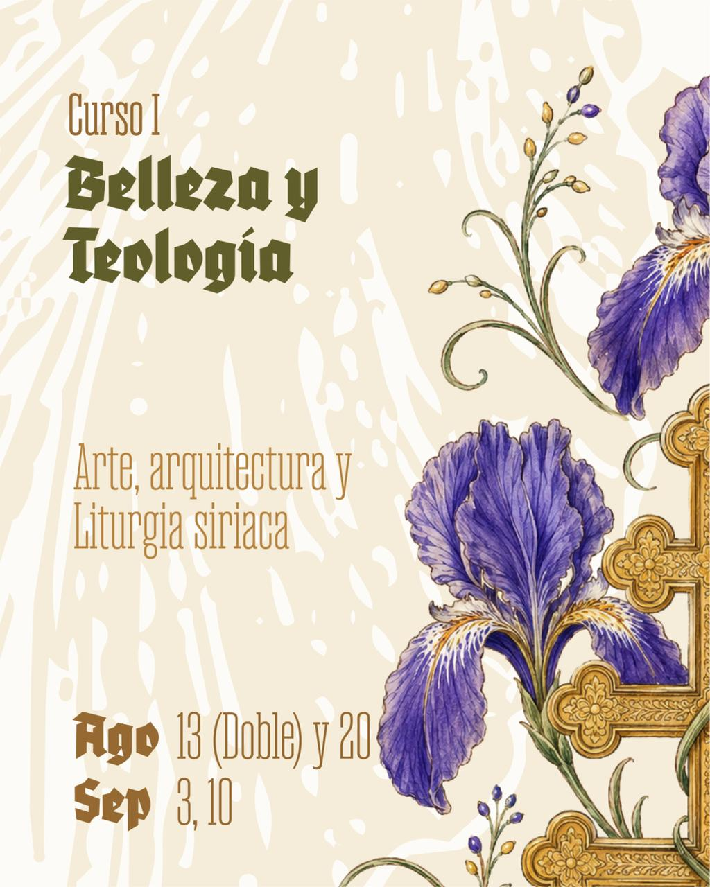

Curso I
$400.000 COP
Belleza y Teología
Arte, arquitectura y liturgia siriaca
Una aproximación al lenguaje de la belleza en la experiencia cristiana oriental y en sus formas litúrgicas, artísticas y espaciales.
13 ago · sesión doble 8–10 p.m.
20 ago · 8–9 p.m.
3 sep · 8–9 p.m.
10 sep · 8–9 p.m.
Primera sesión especial: la clase del 13 de agosto será doble y tendrá una duración de dos horas, de 8:00 p.m. a 10:00 p.m.